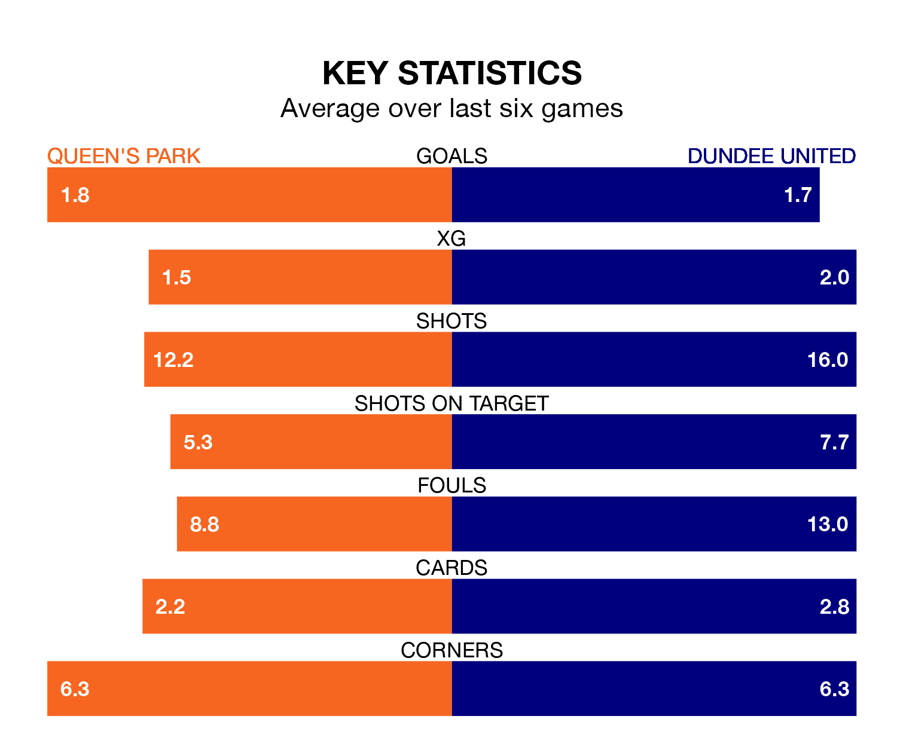

Relegation candidates Queen's Park face a challenge against high-flying Dundee United at Hampden Park on Saturday.
Queen's Park are eighth in the Championship table, and have picked up nine wins and nine draws in their 31 games to date.
The Terrors, meanwhile, are top of the standings with 62 points, having won 18 and drawn eight.
With 59 goals in 31 games so far this season, Dundee are the league's highest scorers with 1.9 goals per game. And they are conceding fewer than average, letting in 21 goals at a rate of 0.7 per game.
Queen's Park, meanwhile, are average scorers, with 1.4 goals per game. They have conceded 1.6 goals per game.
With Jack Walton between the sticks, United can rely on one of the league's safest pair of hands. He has kept 16 clean sheets in his 31 appearances this season, and no 'keeper has prevented the opposition scoring more often in the Championship.
In the Spiders's net, Calum Ferrie has seven clean sheets in 24 games. He has conceded a goal every 65 minutes, more than twice as often as the 140 minutes between goals for Walton.
In the last three years, Queen's Park and Dundee have played each other on three occasions. Dundee won two of them and they drew once.
Their last meeting was on February 24, when Dundee won 3-1 at home.
The hosts are in mixed form in the Championship, with two wins and three draws from their last six games.
With three wins and two draws over that period, the Terrors' form is slightly better – they have taken 11 points from 18, compared to Queen's Park's nine.
Queen's Park's last match was on Saturday, a 2-0 loss against Greenock Morton.
Dundee beat Raith Rovers 2-0 last time out, also on Saturday, with Louis Moult and Tony Watt on the scoresheet.
Saturday's match will be refereed by Duncan Williams, who has taken charge of five Championship games so far this season, issuing two red cards and booking 21 players. He has awarded three penalties.
The last Queen's Park game Williams refereed was a 3-2 away loss to Raith Rovers on September 2. He is yet to oversee a match featuring Dundee this season.
Updated: 16:41 (UTC), 04/04/24